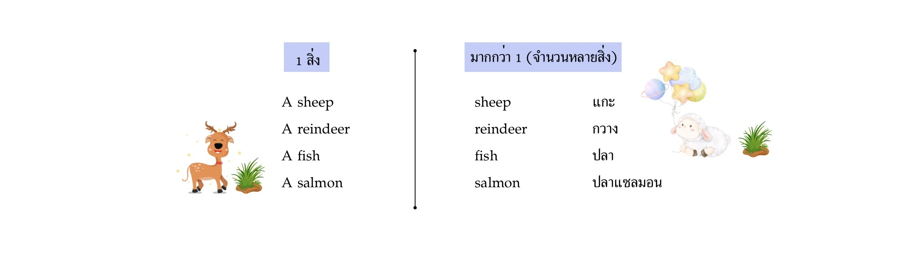

1. Common Nouns
คือ คำนามที่ใช้เรียก คน สัตว์ สิ่งของ สถานที่ทั่วไปแบบไม่เจาะจง เช่น man, woman, mother, car, book, school, hospital แบบนี้ค่ะ
2. Proper Nouns
คือ คำนามที่เรียก เจาะจงเฉพาะสิ่งนั้นๆ ปกติแล้ว มักขึ้นต้นด้วยตัวพิมพ์ใหญ่
- ใช้เรียกชื่อคน เช่น John, Mae, Carla, Tommy, Jane
- ใช้เรียกชื่อประเทศหรือสัญชาติ เช่น Thailand, American, Korean, English, Japanese
- ใช้เรียกชื่อเมืองหรือสิ่งก่อสร้างก็ได้ เช่น Hong Kong, Paris, Big Ben
- ใช้เรียกชื่อแม่น้ำหรือภูเขาก็ได้ เช่น Mount Everest, Niagara Fall
- ใช้เรียกเทศกาลต่างๆก็ได้ เช่น Valentine's Day, Father's Day
3. Singular Nouns
คือ Single แปลว่า โสด มันเลยจะต้องอยู่คนเดียว 🤣
ดังนั้น Singular Nouns มันคือ คำนามที่มีเพียง 1 สิ่ง
ปกติแล้วเราจะเติม A หรือ An เข้าไปข้างหน้ามา 1 สิ่งที่ไม่เจาะจงได้เลย เพื่อบอกจำนวนว่า มีแค่ 1 สิ่งค่ะ เช่น
- A cat ( แมว 1 ตัว )
- A house ( บ้าน 1 หลัง )
- A woman ( ผู้หญิง 1 คน )
- An ant ( มด 1 ตัว )
4. Plural Nouns
( คำนามที่มีมากกว่า 1 สิ่ง )
ปรกติคำนามที่มีมากกว่า 1 สิ่ง/ชิ้น เราจะต้องเติม -s ต่อท้ายคำนามนั้นด้วย เช่น
Two cats ( แมว 2 ตัว )
Three phones ( โทรศัพท์ 3 เครื่อง )
Ten students ( นักเรียน 10 )
Eleven movies ( หนัง 11 เรื่อง )
Eight apples ( แอปเปิล 8 ลูก )
แต่อย่างไรก็ตาม เราจะเติม -s ท้ายคำนามทุกคำตลอดเลยไม่ได้ มันมีข้อยกเว้นด้วยค่ะ
- เติม -s หลังคำนามทั่วไปได้เลย เช่น cups, books, chairs, tables
- เติม -es ถ้าคำนามนั้นลงท้ายด้วย ch, sh, s, ss, x, z, o เช่น beaches, wishes, boxes, dresses, buzzes
คำนามที่ลงท้ายด้วย O ต้องระวังนิดนึงนะคะ เพราะสามารถเติมได้ทั้ง -s และ -es
- เติม -ves ถ้าคำนามนั้นลงท้ายด้วย f (ตัด f ออกก่อนแล้วค่อยใส่ -ves) เช่น calf - calves (ลูกวัว), leaf - leaves (ใบไม้)
-
ตัด y ออกแล้วเติม -ies ถ้าคำนามลงท้ายด้วย y เช่น
baby - babies,
lady - ladies,
story - stories
แต่คำนามบางตัวไม่เติม -ies แต่ใส่ -s ได้เลย เช่น key - keys, tray - trays
***จุดสังเกตคือ ถ้าหน้า y เป็นสระ (a/e/i/o/u) เติม -s ได้เลย
- ข้อยกเว้น (บางคำที่คำนามที่มีมากกว่า 1 ก็ไม่ได้เติม -s / -es เสมอไป มันเปลี่ยนหน้าไปเลย)
-
แต่บางทีคำนามที่มีหลายสิ่ง มันกลับไม่เติม -s ซะงั้น ไม่เติมอะไรเลยค่ะ ให้คงรูปเดิมไว้
เช่น There are many sheep in the field. มีแกะหลายตัวอยู่ในทุ่งกว้าง -
แต่คำนามบางคำ ต้องใส่ -s ติดด้วยตลอด ขาดไม่ได้เลยนะคะ เพราะมันเป็นของที่ต้องมี 2 ขาเสมอ เช่น
- jeans ( กางเกงยีนส์ต้องมี 2 ขา )
- sunglasses ( แว่นกันแดด มี 2 ขา )
- shorts ( กางเกงยีนส์ขาสั้น 2 ขา )
- scissors ( กรรไกรมี 2 ขา )
- แต่คำนามบางประเภท เช่น คำนามที่นับไม่ได้หรือนามธรรม เราจะไม่เติม -s เลย
- คำนามต่อไปนี้ เติม -s ตลอดนะคะ แต่จะเป็นคำนามเอกพจน์ (1 สิ่ง) เท่านั้นค่ะ
5. Collective Nouns
คำนามที่ใช้เรียกเป็นกลุ่ม เป็นคำนามที่เราเรียกแทนกลุ่มหรือฝูง เช่น
- a family - ครอบครัว 1 ครอบครัว (ในกลุ่มนี้เหมือนกันต้องมีสมาชิกอย่างน้อย 2 คนขึ้นไป)
- a gang - 1 กลุ่ม (กลุ่มนี้เหมือนกันต้องมี 2 คนขึ้นไป)
- a class (นักเรียน 1 ห้อง)
- a band (วงดนตรี)
- the police (ตำรวจ)
- a pack of wolves (หมาป่า 1 ฝูง)
- a bunch of flowers (ดอกไม้ 1 ท่อ)
- a team (ทีม)
- cattle (ฝูงวัว)
- committee (คณะกรรมการ)
6. Masculine and Feminine Nouns
คำนามที่ใช้เรียกเพศชายและเพศหญิง
| ชื่อสัตว์ | ตัวผู้ | ตัวเมีย |
|---|---|---|
| lion (สิงโต) | lion | lioness |
| horse (ม้า) | stallion | mare |
| chicken (ไก่) | rooster | hen |
แต่คำนามส่วนใหญ่ ก็ไม่ได้มีการแบ่งเพศ เช่น
- doctor (หมอ)
- engineer (วิศวกร)
- artist (ศิลปิน)
- lawyer (นักกฎหมาย)
- businessperson (นักธุรกิจ)
- farmer (เกษตรกร)
7. Countable and Uncountable Nouns
คำนามที่นับได้และนับไม่ได้

*** มีคำนามอีกประเภทนึงนะคะ เราเรียกว่า “Gerunds” คือ การที่เราเอากริยามาใส่ -ing แล้วคำนั้นจะมีความหมายว่า การ...
มันกลายเป็นคำนามค่ะ ใช้เพื่อทำหน้าที่เป็นประธานหรือกรรมก็ได้ เช่น
| Verb (V.) | กลายเป็น | Gerund (N.) | ความหมาย |
|---|---|---|---|
| Swim | → | Swimming | การว่ายน้ำ |
| Eat | → | Eating | การกิน |
| Walk | → | Walking | การเดิน |
ตำแหน่งของ Gerunds จะวางตรงไหนล่ะ?